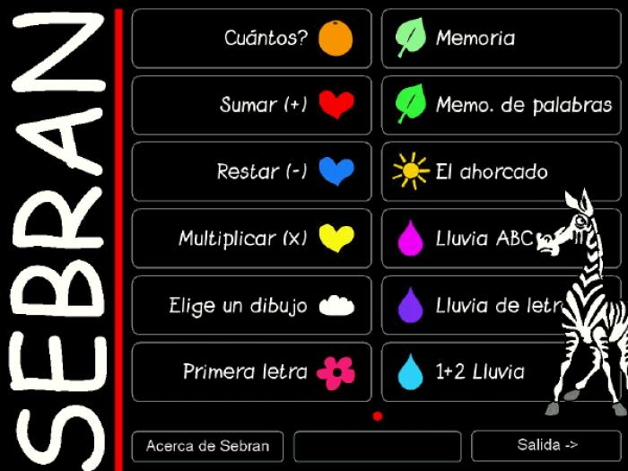
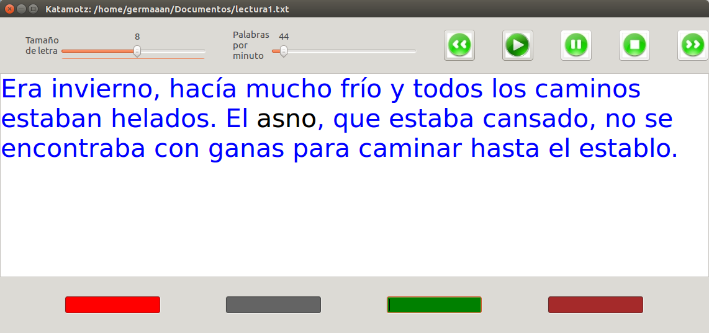
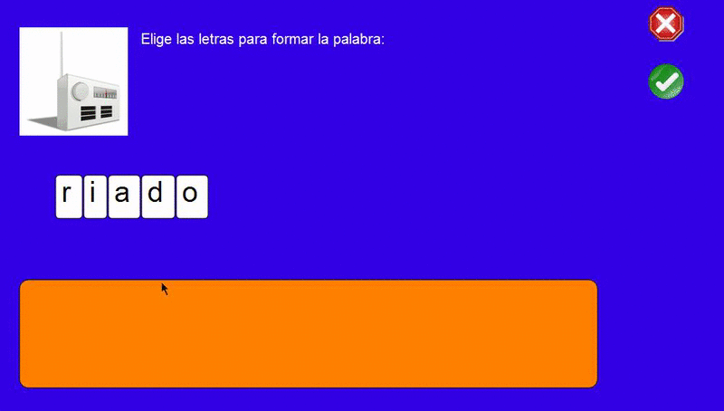
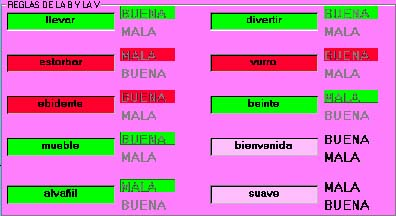

Software Libre para labores educativas

Oficina de Software Libre de la Universidad de Granada
(Twitter: @OSLUGR /
Facebook: @SoftwareLibreUGR)
Granada Geek
(http://www.meetup.com/es-ES/Granada-Geek/)

Educación Infantil y primeros cursos de Educación Primaria
Childsplay
Ejercicios con el objetivo de aprender matemáticas, las letras del abecedeario, deletreo y coordinación mano-ojo mientras juegan. Orientado a niños entre 2 y 7 años.
http://www.childsplay.mobi/
Childsplay
- Juegos: memoria visual, memoria auditiva, Pac-Man, Pong
- Ejercicios de matemáticas
- Puzzles
- Otros: Tres en raya, Arkanoid
GCompris
Un programa educativo con diferentes actividades mediante juegos para niños de entre 2 y 10 años.
http://gcompris.net/index-es.html

GCompris
- Descubriendo el equipo: jugar con periféricos del ordenador
- Actividades de descrubrimiento: colores, sonidos, memoria...
- Actividades de experiencias: varias actividades basadas en el movimiento físico
- Actividades recreativas: jugar al fútbol, pintar, escribir textos...
- Actividades matemáticas: cálculo, geometría y numeración
- Actividades de lectura: seleccionar letras, completar letras...
- Juegos de estrategia: ajedrez, Conecta 4...
Omnitux
Proyecto enfocado en proporcionar actividades educativas alrededor de elementos multimedia (imágenes, sonidos, textos).
http://omnitux.sourceforge.net/index.es.php

Omnitux
- Manipulación del ratón
- Aprendizaje
- Asociaciones
- Memorizar cartas
- Rompecabezas
- Diferencias
- Número
- Escritura
- Arte
- Geografía
Sebran's ABC
12 juegos sobre operaciones aritméticas, lectura y memorización para niños entre 4 y 9 años.
Aprendizaje de lengua castellana
Katamotz Lectura 2.0
Ayuda para mejorar el proceso de lectura aumentando la ligereza de la misma mediante el uso de textos que van aparenciendo y desapareciendo a una velocidad controlada.
Además, tenemos la posibilidad de resaltar letras o palabras.
http://katamotzlectura.blogspot.com.es/p/katamotz-lectura.html
Katamotz Lectura 2.0
Kataluga 2.0
Para niños con dislexia y otros problemas para adquirir competencias lingüísticas.
http://katamotzlectura.blogspot.com.es/p/kataluga.html
Kataluga 2.0
MITO
Desarrollado por la Universidad de Málaga para enseñar ortografía con 4 tipos de juegos, cada uno con sus reglas que los niños deben comprender y aplicar en el juego.
http://www.lcc.uma.es/~cristina/mito/
MITO
KHangMan
El mítico juego del ahorcado para aprender vocabulario.
https://edu.kde.org/khangman/